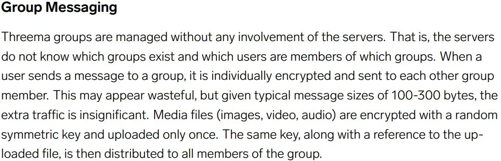

How does all of this work?
Basically, Threema's servers don't store any groups permanently. Or anything for that matter. All they do is relay messages and information. The groups you see live on the devices of people chatting within them. They cannot be shut down by anyone other than its creator.

(From Threema's whitepaper)
As far as security is concerned, groups are encrypted just as well as direct messages, they utilize Perfect Forward Secrecy thanks to Threema's Ibex protocol.
Things to keep in mind
- When you join a group, it's impossible to see previously sent messages. (Refer to the screenshot of the whitepaper. When a message is sent in a group, it's sent to all of its current members.)
- Typing indicators are not supported. You won't know who is currently typing.
- There can't be multiple group admins. That's why I can't invite you to the groups you choose, I didn't create them.
- You may encounter an error message saying "could not send message". This usually means there are inactive accounts in the group. Don't worry, others can see your message just fine.
How does Threema make money?
A one time payment of 5€ per user can't sustain a service indefinitely, which is why Threema offers their services to companies and organisations, notable ones being Mercedes and the Swiss police.
Is there a ban list?
Yes. Fortunately it's rather short. Who goes onto the ban list? People kicked out of multiple groups for breaking their rules.